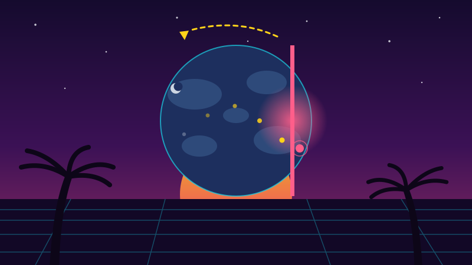

November 18, 2026 · 3 min read
GTA VI Is Already Out in New Zealand — How Tonight's Global Rollout Actually Works

Illustration by The Discovery Wire
GTA VI Is Already Out in New Zealand — How Tonight's Global Rollout Actually Works
Somewhere in Auckland, it is already November 19 — and Grand Theft Auto VI is already out.
Rockstar did not give its biggest launch ever a single worldwide starting gun. Instead, GTA VI unlocks at midnight local time on November 19 in every region, on PlayStation 5 and Xbox Series X|S, per Rockstar's own support guidance published November 3. Because the planet turns, that means the game has been live for hours already — and most of the world is still waiting for its turn.
The wave, hour by hour
New Zealand reached midnight first, at 6:00 AM Eastern today (11:00 UTC, Wednesday November 18). From there, midnight sweeps west at one time zone per hour. The full run, converted to US Eastern:
- 6:00 AM Wed — New Zealand (live now; reviews dropped at the same moment)
- 8:00 AM Wed — Australia (Sydney time)
- 10:00 AM Wed — Japan and South Korea
- 1:30 PM Wed — India
- 6:00 PM Wed — Central Europe
- 7:00 PM Wed — United Kingdom and Ireland
- 10:00 PM Wed — Brazil and Argentina
- 12:00 AM Thu — United States and Canada (Eastern)
- 1:00 AM Thu — Mexico, the last major market
By the time the US unlocks, New Zealand players will have had an 18-hour head start.
The one-time-zone catch for US players
Rockstar's support page says "midnight local time," but the US storefronts don't actually run 4 separate midnights. The PlayStation Store and Microsoft Store list one nationwide unlock: midnight Eastern. That's good news on the West Coast — Pacific players start at 9:00 PM Wednesday, not midnight — and it means nobody in the US is waiting longer than Eastern. If you preloaded after downloads opened on November 10, your copy simply switches on.
Yes, the New Zealand trick is a real thing
Every major rolling launch produces the same folk ritual: players outside the first region try to convince their console it lives in Auckland. On Xbox, the console's location setting is the lever, which is why the trick is mostly an Xbox story — the Microsoft Store listing follows the console's region. On PlayStation, your unlock follows the country of your PSN account, which can't be casually changed, so the trick largely doesn't apply.
The phenomenon is big enough that Tourism New Zealand — the country's actual government tourism agency — posted a playful invitation to trick-users to come visit for real. Rockstar's official schedule, for the record, remains midnight local time, November 19; the trick is a workaround, not an official early-access program.
The scale of what's landing tonight
Reuters puts the game's production cost at an estimated $1 billion or more. Analytics firm Sensor Tower estimates close to 16 million copies had already sold for more than $1.5 billion as of Tuesday — before most of the planet could even play. Take-Two's stock jumped about 7% in premarket trading. Fans are booking whole weeks off work, and the main story alone is estimated at around 50 hours, following Lucia Caminos and Jason Duval through Vice City and the wider state of Leonida.
One practical warning for tonight: because New Zealand has been playing for hours, spoilers are already loose on social media. If you're waiting for the midnight unlock and want to go in clean, scroll carefully today.
Reference: Reuters, "Gamers enter Vice City as Grand Theft Auto VI begins global rollout" (Soni & O'Brien), Nov 18, 2026; Rockstar Games Support regional release guidance, Nov 3, 2026; regional storefront unlock data compiled from the PlayStation Store and Microsoft Store listings.
Source: Reuters — read the original report
← Back to latest stories